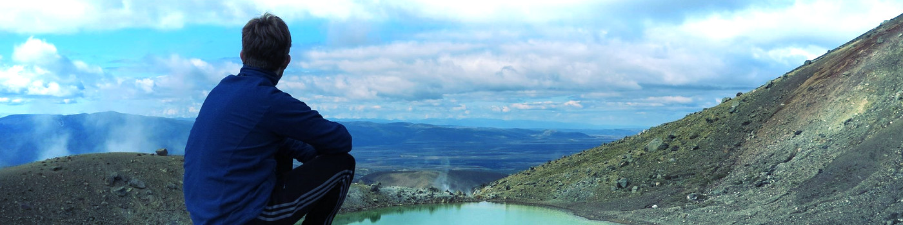

A detailed version of my CV can be found here.
| 2019 – now | PhD candidate at University of Vienna |
| 2018 – 2019 | Teaching assistant at TU Kaiserslautern |
| 2018 (2 months) | Academic visit at Haussdorf Center of Mathematics Bonn |
| 2018 (4 months) | Academic visit at The University of Auckland |
| 2016 (6 months) | ERASMUS at TU Delft |
| 2013 – 2018 | B.Sc. & M.Sc. in Mathematics at TU Kaiserslautern |
| 2021 – 2022 | Programming crash courses in Julia and Python for PhD students in Vienna |
| 2014 – 2016 | Tutor at TU Kaiserslautern (8 courses), including subjects like Analysis for enginieers Linear algebra and analysis I + II Numerical methods for linear algebra and analysis |
| 2012 – 2016 | Programming assistent at Fraunhofer ITWM |
| Programming | 10 years of experience. Advanced skills in Julia, C++, Python, Matlab, JavaScript. Creator of MyPaintEdSlides. |
| 2021 | EMBO scientific exchange grant for academic visit in Toulouse |
| 2018 | DAAD-PROMOS scholarship for academic visit in Auckland |
| 2017 | Main price on DMV students conference 2017 for academic visit to Bonn |
| 2016 -- 2018 | Felix-Klein scholarship (Fraunhofer ITWM Kaiserslautern) |
| 2014 -- 2016 | Deutschlandstipendium (scholarship, partially sponsored by cognizant) |
See also my scientific activities page and research projects page.
